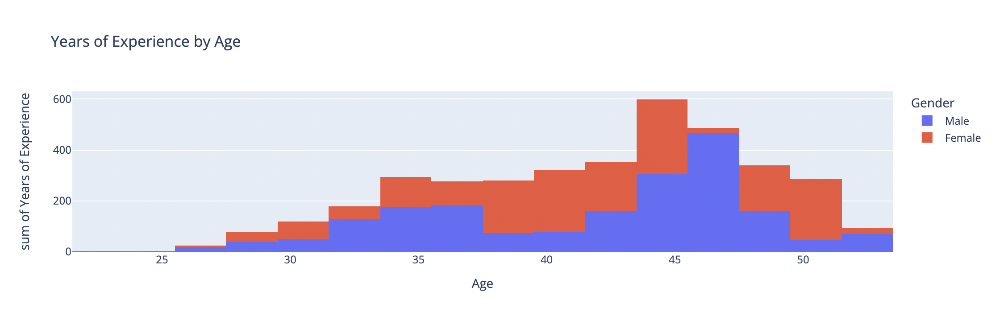
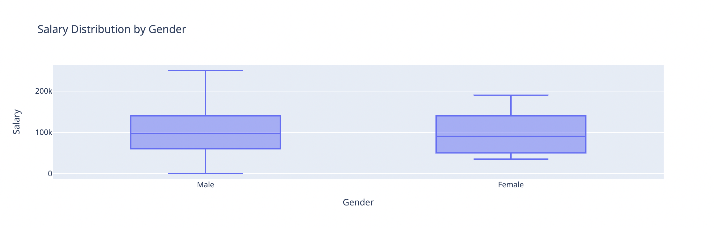
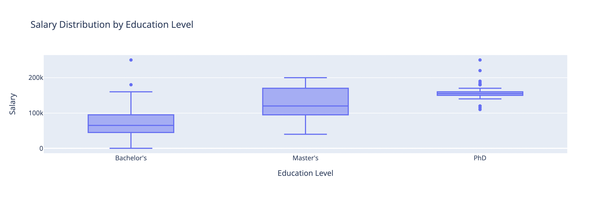

Exploring the Relationship Between Gender and Wages#
This project examined the relationship between average salary and various factors, including age, gender, years of experience, and education level in the United States, using data from a Kaggle dataset. The analysis involved data cleaning, descriptive statistics, and creating visualizations with Python and Pandas. Hypothesis testing was performed to assess salary differences between genders, and regression analysis was used to explore the correlation between experience and earnings. The study highlights skills in data analysis, statistical inference, and programming. The full report with detailed methodologies and findings is provided below.
Final Report#
Code#
import pandas as pd
import numpy as np
import plotly.express as px
import copy
data = pd.read_csv('SalaryData.csv')
data = data.dropna(inplace = False, axis = 0)
data
| Age | Gender | Education Level | Job Title | Years of Experience | Salary | |
|---|---|---|---|---|---|---|
| 0 | 32.0 | Male | Bachelor's | Software Engineer | 5.0 | 90000.0 |
| 1 | 28.0 | Female | Master's | Data Analyst | 3.0 | 65000.0 |
| 2 | 45.0 | Male | PhD | Senior Manager | 15.0 | 150000.0 |
| 3 | 36.0 | Female | Bachelor's | Sales Associate | 7.0 | 60000.0 |
| 4 | 52.0 | Male | Master's | Director | 20.0 | 200000.0 |
| ... | ... | ... | ... | ... | ... | ... |
| 370 | 35.0 | Female | Bachelor's | Senior Marketing Analyst | 8.0 | 85000.0 |
| 371 | 43.0 | Male | Master's | Director of Operations | 19.0 | 170000.0 |
| 372 | 29.0 | Female | Bachelor's | Junior Project Manager | 2.0 | 40000.0 |
| 373 | 34.0 | Male | Bachelor's | Senior Operations Coordinator | 7.0 | 90000.0 |
| 374 | 44.0 | Female | PhD | Senior Business Analyst | 15.0 | 150000.0 |
373 rows × 6 columns
data.drop('Job Title', axis=1, inplace=True)
data['Age'] = data['Age'].astype('int')
df = copy.deepcopy(data)
data.loc[data['Gender']=='Female', 'Gender'] = 0
data.loc[data['Gender']=='Male', 'Gender'] = 1
data.loc[data['Education Level']=="Bachelor's", 'Education Level'] = 1
data.loc[data['Education Level']=="Master's", 'Education Level'] = 2
data.loc[data['Education Level']=="PhD", 'Education Level'] = 3
data
| Age | Gender | Education Level | Years of Experience | Salary | |
|---|---|---|---|---|---|
| 0 | 32 | 1 | 1 | 5.0 | 90000.0 |
| 1 | 28 | 0 | 2 | 3.0 | 65000.0 |
| 2 | 45 | 1 | 3 | 15.0 | 150000.0 |
| 3 | 36 | 0 | 1 | 7.0 | 60000.0 |
| 4 | 52 | 1 | 2 | 20.0 | 200000.0 |
| ... | ... | ... | ... | ... | ... |
| 370 | 35 | 0 | 1 | 8.0 | 85000.0 |
| 371 | 43 | 1 | 2 | 19.0 | 170000.0 |
| 372 | 29 | 0 | 1 | 2.0 | 40000.0 |
| 373 | 34 | 1 | 1 | 7.0 | 90000.0 |
| 374 | 44 | 0 | 3 | 15.0 | 150000.0 |
373 rows × 5 columns
df
| Age | Gender | Education Level | Years of Experience | Salary | |
|---|---|---|---|---|---|
| 0 | 32 | Male | Bachelor's | 5.0 | 90000.0 |
| 1 | 28 | Female | Master's | 3.0 | 65000.0 |
| 2 | 45 | Male | PhD | 15.0 | 150000.0 |
| 3 | 36 | Female | Bachelor's | 7.0 | 60000.0 |
| 4 | 52 | Male | Master's | 20.0 | 200000.0 |
| ... | ... | ... | ... | ... | ... |
| 370 | 35 | Female | Bachelor's | 8.0 | 85000.0 |
| 371 | 43 | Male | Master's | 19.0 | 170000.0 |
| 372 | 29 | Female | Bachelor's | 2.0 | 40000.0 |
| 373 | 34 | Male | Bachelor's | 7.0 | 90000.0 |
| 374 | 44 | Female | PhD | 15.0 | 150000.0 |
373 rows × 5 columns
age = data.groupby('Gender')['Age'].describe()
age
| count | mean | std | min | 25% | 50% | 75% | max | |
|---|---|---|---|---|---|---|---|---|
| Gender | ||||||||
| 0 | 179.0 | 37.581006 | 6.992603 | 23.0 | 31.0 | 38.0 | 42.5 | 52.0 |
| 1 | 194.0 | 37.293814 | 7.154205 | 24.0 | 32.0 | 36.0 | 44.0 | 53.0 |
exp = data.groupby('Gender')['Years of Experience'].describe()
exp
| count | mean | std | min | 25% | 50% | 75% | max | |
|---|---|---|---|---|---|---|---|---|
| Gender | ||||||||
| 0 | 179.0 | 10.011173 | 6.341843 | 0.0 | 4.0 | 10.0 | 15.0 | 25.0 |
| 1 | 194.0 | 10.048969 | 6.765803 | 0.0 | 4.0 | 8.5 | 16.0 | 25.0 |
salary = data.groupby('Gender')['Salary'].describe()
salary
| count | mean | std | min | 25% | 50% | 75% | max | |
|---|---|---|---|---|---|---|---|---|
| Gender | ||||||||
| 0 | 179.0 | 97011.173184 | 45916.141054 | 35000.0 | 50000.0 | 90000.0 | 140000.0 | 190000.0 |
| 1 | 194.0 | 103867.783505 | 50182.461438 | 350.0 | 60000.0 | 97500.0 | 140000.0 | 250000.0 |
with pd.ExcelWriter('clean.xlsx') as writer:
data.to_excel(writer, sheet_name = "Data Set")
age.to_excel(writer, sheet_name = "Age Stats")
exp.to_excel(writer, sheet_name = "Experience (yrs) Stats")
salary.to_excel(writer, sheet_name = "Salary Stats")
# data.to_csv('clean_df.csv')
# print("done")
fig = px.histogram(df, x = 'Age', y = 'Years of Experience', color = 'Gender' , title = 'Years of Experience by Age', width = 800)
fig.show()

fig = px.box(df, x = 'Gender', y = 'Salary', title="Salary Distribution by Gender", width = 800)
fig.show()

fig = px.box(df, x = 'Education Level', y = 'Salary', title="Salary Distribution by Education Level", width = 800)
fig.show()
